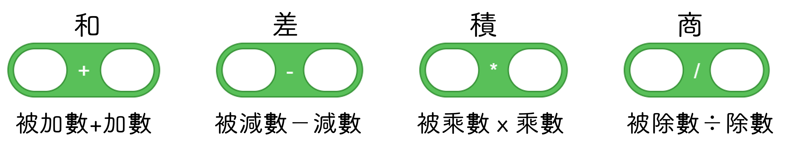
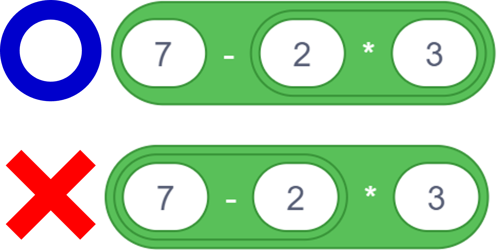
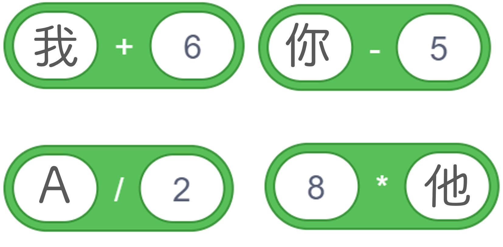

|
|
|---|
 數學運算子
數學運算子
「數學運算子」就是我們在數學計算中常見到的 + − × ÷ 符號。

在Scratch中，如果除數是0，則：
❶被除數是0：也就是 0 ÷ 0，得到值是‶NaN″
❶被除數不是0：也就是(除0外的任何數)÷0，得到值是‶Infinity″
🔹計算方式與一般在紙上的計算方式一樣：
①由左至右依序計算
②同一個積木上的算式要先算(就是有括號要先算的意思)
③先乘除後加減
④只能計算數字
⇒如果該參數不是數字則該參數值會強制轉換成0再計算
⇒如果是布林積木，則會依積木結果傳回數字「1」或「0」來計算
💥如下例子：
5+8-4（左至右計算）
(6+2)x(9-5)（括號先算▶放同一積木）
7-2x3（乘除先算，放同一積木）
（非數字，轉換成「0」再算）
（依布林值轉換，[true]+8⇒1+8=9）
（依布林值轉換，[false]+[true]⇒0+1=1）